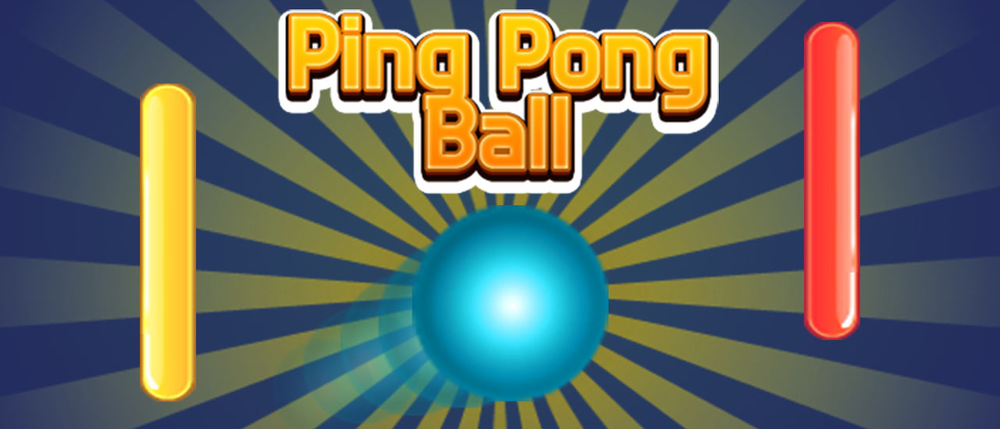

AI PING PONG GAME
Instructions

Play Game
Status:
Restart
Source Code :
Linuk
|| Game Credit : Ping Pong || Made By : Amey Ajay Pathak
× Close
Instructions
1. First keep your laptop screen straight
2. Move yourself approximately 3-4 feet away from the laptop
3. Move your right wrist in an ascending and decending manner, a red dot should appear on your right wrist
4. Now press the play button, and again move yourself 3-4 feet away from laptop
5. The red paddel is your paddel, that will move as per the movement of your right wrist